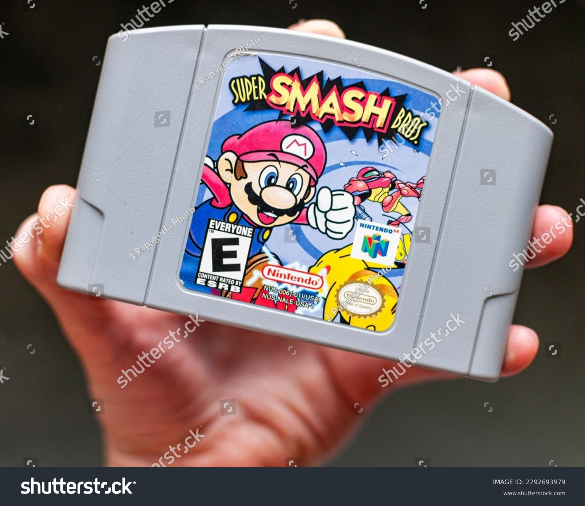
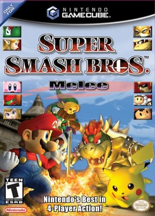
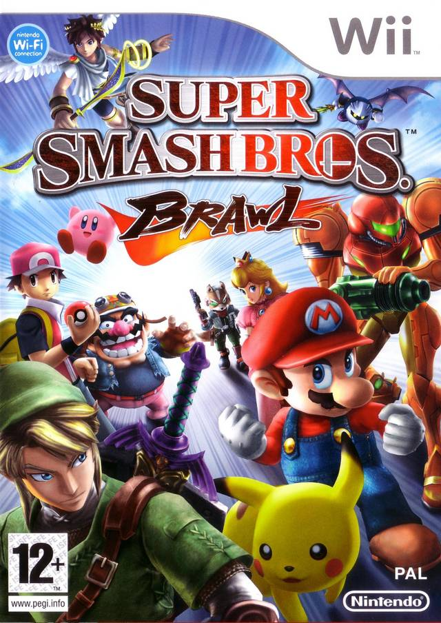
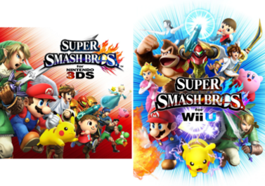
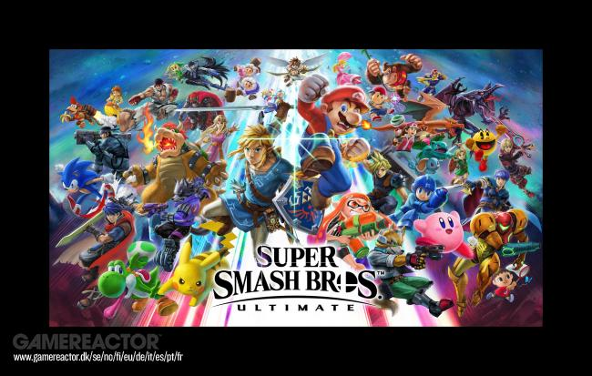

Super Smash Bros is a popular game of the Nintendo franchise, the first game was released in 1999 the games popularity has risen immensely since its release. The game is a massive crossover througout the Nintendo franchise with third party characters like Sonic the Hedgehog, Solid Snake, and more also appearing across the games. The game was created by Mashiro Sakurai and has been developed by different companies like Hal labratory, Sora LTD, Monolith Soft, Bandai namco, and Game Arts, throughout the games. The game is mainly a multiplayer fighting game where you have to damage the oponent and hit the off the platform. The hp bar will increase in percentage when a player takes damage. The higher a players percentage the easier it will be to knock off the oponent.
All the smash games in order
Super Smash Bro 1999 (Nintendo 64)
The first game that was released for the Smash brothers game franchise was for the Nintendo 64. Super smash bros was first released in 1999, and the game sold around 5 million units in the US and Japan. At the time the game only had a roster of 12 characters to choose from which include, Mario, Pikachu, Link, Yoshi, Samus Aran, Donkey Kong, Kirby, Fox McCloud, Ness,Luigi, Captain Falcon, and Jigglypuff. Up to 4 players can play in the multiplayer mode, each round had customizable rule sets that you could choose before the round starts.The game includes an adventure mode which will always have the same oppenents, but you can change the difficulty to make it more challenging. There was other single player modes like training, break the targets and board the platform. There are 8 different stages to choose from in multiplayer mode.

Super Smash Bros Melee 2001 (Gamecube)
Super Smash Bros melee for the game cube was released in 2001 for the Nintendo Gamecube.This game has included a bigger cast then the first game. Alongside the original fighters Peach, Bowser, Sheik, Zelda, Mewtwo, and Ice Climbers joined the battle. The game had a larger budget due to the first game being a sucess at the time. Smash Bros Melee sold 7 million copies, and was the best selling game on the game cube. There are 29 stages to choose from. The game introduced 2 new single player modes, with the classic mode in the last game. There is Adventure mode, and All star mode. There are also more multiplayer and tornement modes.
Super Smash Bros Brawl 2008(Wii)
The third Smash bros game realesed in 2008 for the Nintendo Wii. With Lucario replacing Mewtwo, Pokemon Trainer, Lucas, Pit, Olimar, Diddy Kong, Meta Knight, and characters from other franchises like Sonic The Hedge Hog and Solid Snake were added in the game. This was the first game in the series to include the Final Smash mechanic. This was also the first game to include online play. This game also includes a full story mode. The game has a total of 41 stages.The game can work with four different types of controllers being, the Wii remote and numchuck, the classic controller, and the Nintendo Gamecube controller. There is also an adventure mode called "The Subspace Emissary", where each character has unique stories, and there are sidescrolling missions along with boss fights.
Super Smash Bros. 2014 (for the Nintendo 3DS, and Wii U)
The fourth and fifth game were both released in 2014 for the Nintendo 3DS and Wii U. The 2 games share the same character roster but have different game mechanics. New 3rd party characters include, Mega Man, Pac-Man, Ryu, Cloud, and Bayonetta. While Solid Snake was removed from the game.The 3DS version has 3D graphics and stages based on games for handheld consoles, and an exclusive tour called Smash Run. While the Wii U game has a mode called Smash Tour with an atered stage builder and the Special Orders modes.The 3DS version was released first on September 13, 2014 in Japan, and on October 3rd, 2014 in the rest of the world.The Wii U version was released on November 21, 2014 in North America, on November 28, 2014 in Europe, on November 29, 2014 in Australia, and on December 6th, 2014 in Japan.
Super Smash Bros Ultimate 2018 (Nintendo Switch)
The latest installment for the game was released in 2018 for the Nintendo Switch. The roster increased by adding new characters like Inkling, Princess Daisy, ridley, Simon Belmont, Ritcher Belmont, Chrom, Dark Samus, King K. Rool, Issabelle, Ken Masters, Incineroar. Pirahna Plantwas a dlc character released in november 2018. For the 2018 game awards Joker, Hero,and Banjo and kazooie, was confirmed as new fighters for the second and third Fighters Pass dlc. In Janurary 2020 sakurai miamota released Terry bogard, Byleth, Min Min as the final fighters for the fighters pass dlc. In October 2020 Minecraft Steve, was added to the game. Sephiroth was added to the game for the 2020 game awards. In march 2021 Pyra and Mythra was added to the game. In September 2021 Kazuya Mishima was added to the game, and eventually Sora was added to the game in October. Super Smash Bros Ultimate also added a new spirit mode augments characters abbilities into the battle once equiped. Spirits can be obtained by, playing various modes, buy them from the in-game shop, or by completing Challenges. There was also a new adventure mode named world of light where galeem a powerful foe turns everyone into spirits the only one to escape is kirby and he has to go around fighting each one with every victory a new character is unlocked.
